Part A.1: Shoot the Pictures
Here's three pairs of photos I shot from around the bay. I'll show the manually-selected point correspondences in the next section.
View from a hill in SF.
A staircase in Main Stacks.
View from a hiking trail overlooking Lexington Reservoir.
Part A.2: Recover Homographies
In order to calculate the homography matrix \(H\) that relates two images, I set up the linear system of equations \(Ah = b\). Let \((x_{i,1}, y_{i,1})\) be a point in the first image and \((x_{i,2}, y_{i,2})\) be the corresponding point in the second image. Then \(A\) is a \(2N \times 8\) matrix, where each \(2 \times 8\) block is given by:
\[
\begin{bmatrix}
x_{i,1} & y_{i,1} & 1 & 0 & 0 & 0 & -x_{i,2} x_{i,1} & -x_{i,2} y_{i,1} \\
0 & 0 & 0 & x_{i,1} & y_{i,1} & 1 & -y_{i,2} x_{i,1} & -y_{i,2} y_{i,1}
\end{bmatrix}.
\]
Additionally, \(b\) is a length-\(2N\) vector consisting of the x and y coordinates of the destination points stacked on top of each other, given by
\[
\begin{bmatrix}
x_{1,2} \\ y_{1,2} \\ \dots \\ x_{n,2} \\ y_{n,2}
\end{bmatrix}.
\]
Finally, \(h\) is an \(8\) element vector that contains the first \(8\) elements of the homography matrix \(H\). The last element is simply set to \(1.0\).
This works because, for each \(i\), the system is simply
\[
\begin{bmatrix}
x_{i,1} & y_{i,1} & 1 & 0 & 0 & 0 & -x_{i,2} x_{i,1} & -x_{i,2} y_{i,1} \\
0 & 0 & 0 & x_{i,1} & y_{i,1} & 1 & -y_{i,2} x_{i,1} & -y_{i,2} y_{i,1}
\end{bmatrix}
\begin{bmatrix}
a \\ b \\ c \\ d \\ e \\ f \\ g \\ h
\end{bmatrix}
=
\begin{bmatrix}
x_{i,2} \\ y_{i,2}
\end{bmatrix},
\]
which is equivalent to the system
\[
\begin{bmatrix}
a & b & c \\ d & e & f \\ g & h & 1
\end{bmatrix}
\begin{bmatrix}
x_{i,1} \\ y_{i,1} \\ 1
\end{bmatrix}
=
\begin{bmatrix}
x_{i,2} \\ y_{i,2} \\ 1
\end{bmatrix}.
\]
I then used least-squares to solve this system, and reshaped it.
For each pair of images, here's the manually-picked point correspondences and the associated homography matrix.

\[
H_{SF} = \begin{bmatrix}
0.515 & -0.084 & 395.212 \\ -0.077 & 0.825 & 53.028 \\ 0.000 & 0.000 & 1
\end{bmatrix}
\]
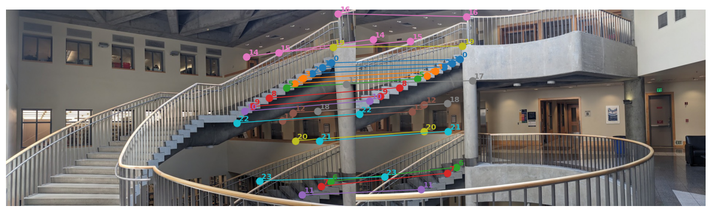
\[
H_{Stacks} = \begin{bmatrix}
0.257 & 0.003 & 617.025 \\
-0.244 & 0.851 & 66.629 \\
0.000 & 0.000 & 1
\end{bmatrix}
\]
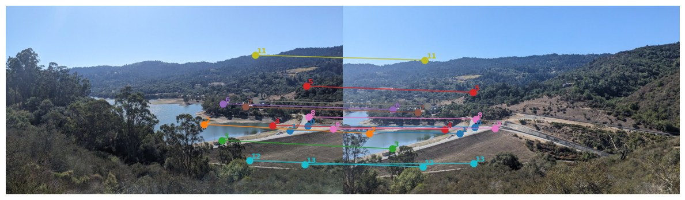
\[
H_{Hike} = \begin{bmatrix}
0.388 & 0.001 & 513.757 \\
-0.162 & 0.864 & 23.777 \\
0.000 & 0.000 & 1
\end{bmatrix}
\]
Part A.3: Warp the Images
In order to warp the images, I first calculated where the four corners of the image would map to under the homography and used this information to calculate the height and width of the output image (the difference of the maximum and minimum coordinates of the warped corners). Then, I calculated the inverse transformation of the homography (adding in a translation to account for the fact that the origin of the new image is slightly displaced from the top-left warped corner). For every pixel in the output image, I found its preimage under the homography. If it landed within the bounds of the image, I either rounded it (Nearest Neighbors) or performed a linear combination of its neighbors (Bilinear). I also added an alpha channel to the output which was 1 for the valid pixels of the output.
A sign at the Cheeseboard pizza kitchen.
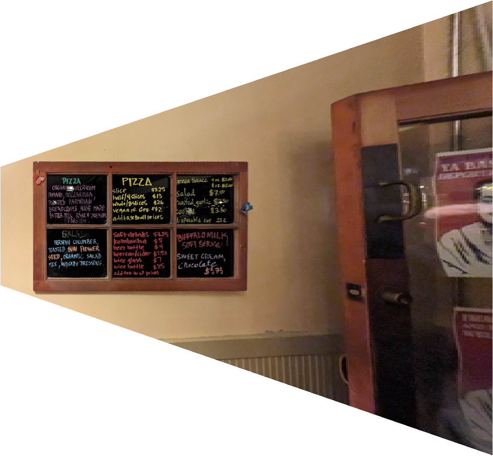
Nearest Neighbors interpolation
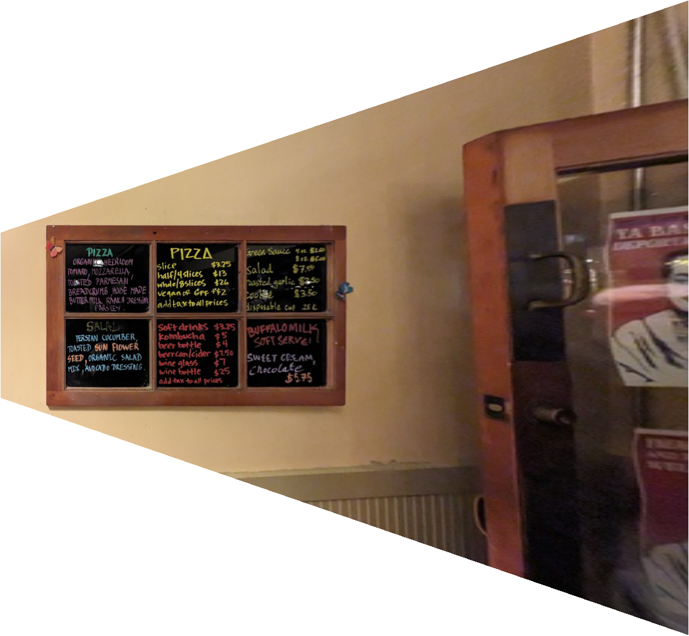
Bilinear interpolation
A microwave from my kitchen.
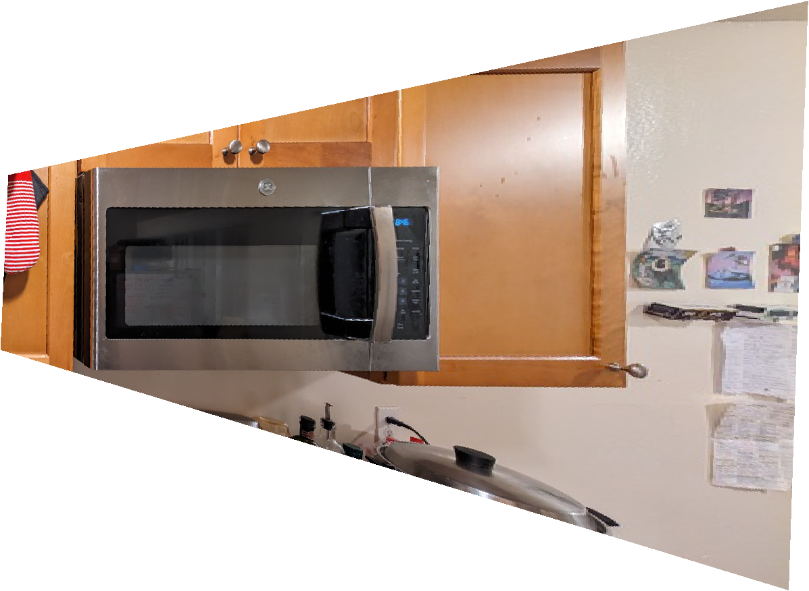
Nearest Neighbors interpolation
Part A.4: Blend the Images into a Mosaic
This part mostly consisted of putting everything together. I computed the homography that would send the points manually chosen from the second image to those in the first image. Then, similarly to A.3, I computed the size of the output image by mapping the corners of the input images and subtracting the minimum and maximum coordinates. After warping the second image, I simply composed both images onto the canvas. I also used alpha blending, explained below.
For each example, I'll show the two raw images and the resulting panorama mosaic.

Left image

Right image
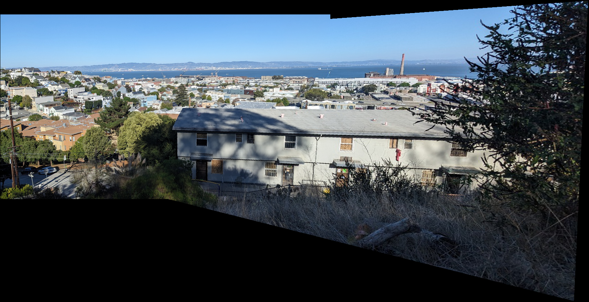
Composed image
Left image
Right image

Composed image
Left image
Right image
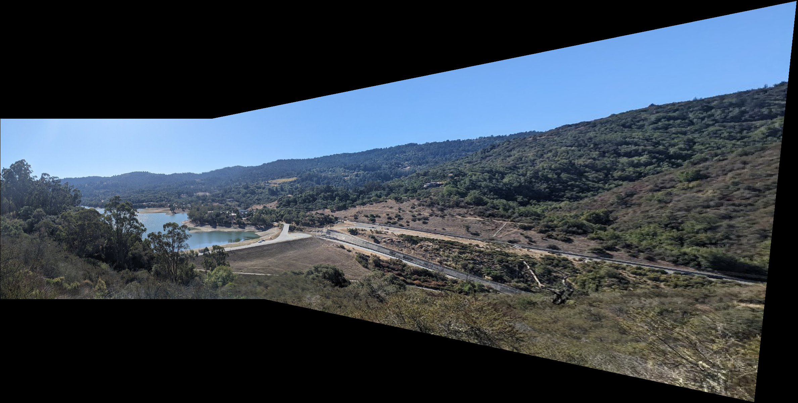
Composed image
Here's a visualization of how the blending improved the results. When composing the two images, I used alpha channels with values near 1 near the center of the image and values near 0 near the edges. The alpha channel for the second image was warped, and then in the overlap portion, the images were weighted proportional to their alpha value.
Here's how the alpha channels looked.
Here's a comparison of the composition without and with the alpha blending on the SF image. Notice that the version without blending has some edge artifacts.
Without alpha blending
With alpha blending
Part B.1: Harris Corner Detection (with ANMS)
I used the provided code for Harris Corner Detection. However, since Harris Corner Detection provides way too many points of interest, I used ANMS (Adaptive Non-Maximal Suppression) to choose 500 points evenly distributed throughout the image. I used a vectorized approach. For each point of interest, I calculated the minimum suppression radius, which is the minimum radius such that the point's H-value is not sufficiently smaller than all other H-values in that circle. I experimentally found a value of \(0.9\) to work well. To do this, I computed an \(N \times N\) distance matrix of all pairwise distances, then masked using the condition and calculated the minimum distance value for each point. Finally, I returned the coordinates points with the highest radii. I had to make a point to reverse the coordinates outputted by the Harris detector.
Here's the detected corners without and with ANMS on the left picture from SF.
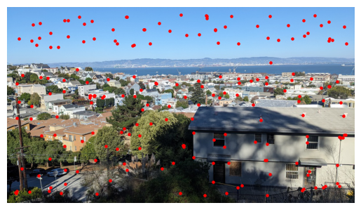
With ANMS (200 points)
Part B.2: Feature Descriptor Extraction
For each keypoint identified in B.1, I extracted a \(40 \times 40\) patch around it and then downsampled to \(8 \times 8\) with bilinear interpolation. I then performed bias/gain normalization for each patch, where I subtracted out the mean and divided by the standard deviation so the patch would have mean \(0\) and standard deviation \(1\). Finally, I flattened each patch into a length-\(64\) feature vector, although for visualization purposes I skipped the flattening below.
Here's the first five features from the first image.
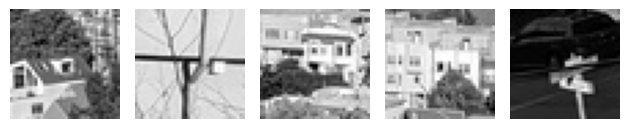
Here's the first five features from the second image.
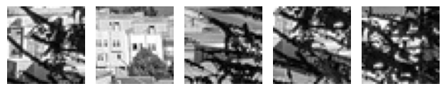
Part B.3: Feature Matching
For each feature computed for the first image in B.2, I extracted the two features in the second image with the lowest L2 differences. I used a vectorized approach that involved a distance matrix. In order to be robust to outliers, I applied Lowe's Ratio test, in which features are only considered valid if their L2 errors from the best match are sufficiently smaller than their L2 errors from the second-best match. I experimentally determined \(0.4\) to work.
Here's the first five features from the first image (that have a valid match, after culling with Lowe's Ratio test), and the corresponding features from the second image. Notice that the features are very similiar, except for a visible skew in the 2nd and 5th images.
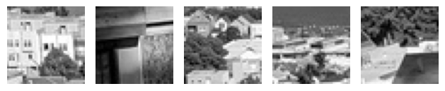
Part B.4: RANSAC for Robust Homography
In order to remove any outlier feature matches from B.3, I implemented RANSAC. This method performs the following steps in a loop: it selects four keypoint pairs at random, calculates the exact homography matrix between them, and determines how many other keypoint pairs agree with this homography. I checked this last step by computing the reprojection error and checking if it was below a threshold of \(3\). I ran this for \(100\) iterations, keeping the configuration that resulted in the most "inliers", and returned those inliers.
Here's the final fully-automatic mosaics for the three examples, compared with the result with handpicked points. Notice that there is a slight difference between the two, due to small differences in the homography matrix.
Manual correspondences
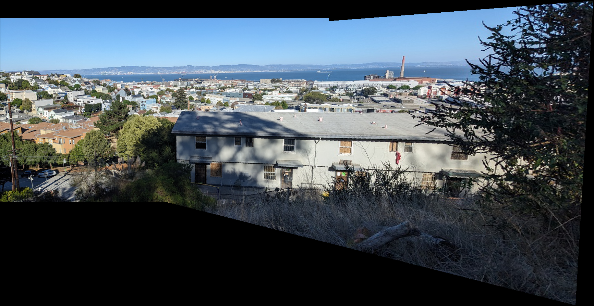
Automatic correspondences
Manual correspondences
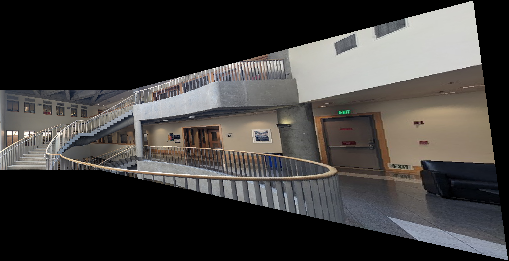
Automatic correspondences
Manual correspondences
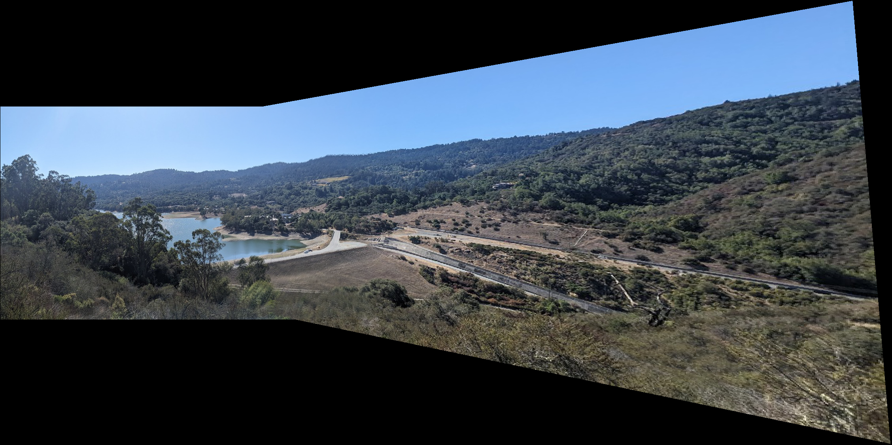
Automatic correspondences